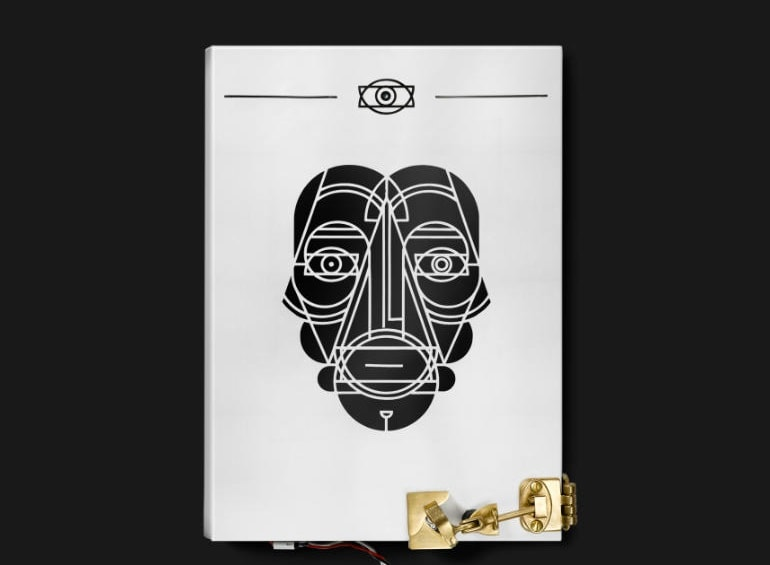

It takes our brain a tenth of a second to pass judgement on someone new. By now, you already have at least one opinion of me.
I hope you take the time to make more!
If Google was a person, he’d hate me. I must have asked him at least a thousand questions when making this website. Despite our one-sided friendship, let me tell you why I spend many Friday nights hanging out with Google.
I sleep best at night knowing I have put my brain to full use during the day. When I graduated from the journalism program at Ryerson University I was not ready to stop learning; I continue to read history books, science papers, the news and now some code. I am constantly web browsing and researching.
This website has been my HTML / CSS playground, so welcome to draft number one! I say, “draft number one,” because I am always trying to improve. Let's be honest, there are plenty of ways this website could be better... I am not done bugging Google yet! I am self-starter who is always full of questions.
Like this website, I have learned that hard work is self-fulfilling. Discovery Channel scripts, NAV CANADA aviation manuals, Bentall Kennedy capital executive summaries, science and technology web content — each of these pieces I’ve written were personally enriching. I enjoy the process of learning, applying and forever improving.
Being a journalism graduate, I studied how to write for various audiences and how to deliver content on multiple media platforms. I was one of the few who actually enjoyed grammar classes, and likewise excelled in editing. One of my proudest attributes developed in the journalism program was the ability to write engaging and quality content under the pressure of strict deadlines. My academic success lead me to write technical manuals for NAV CANADA, produce science and technology segments for Discovery Channel and now manage the World Exchange Plaza's website content. I hope to start my next adventure with the same passion and energy.
On a more personal note, I’m an Ottawa dwelling, dog lover who owns a poodle that is possibly smarter than me. I am a happy-go-lucky friend who enjoys sarcasm, good grammar and a long hike. I play piano, soccer and also snowboard. I like being a nerd, I like dressing up and I like beating the boys in sports!
You can learn a little more about me by clicking on my resume and scrolling through some of my work below.
![Fukahori Goldfish Art that swims. You may think you’re looking at a real, live goldfish that’s been dipped in glue and slapped on a canvas … but I can assure you that’s not the case. Riusuke Fukahori is an internationally acclaimed artist known for his Fukahori Goldfish, a style of painting that captures the beauty of the goldfish on a flat, but seemingly 3D surface. His paintings are so life-like you may just want to buy one of his decorative bowls instead of getting that fish you’ve always wanted. It looks just as pretty and costs less to feed!](img/fishy_text.PNG){kind=link}
![Bioluminescent Forest You’ve all heard of glow worms and fireflies, but what about the rest of the forest? Wouldn’t it be neat if the dirt and the leaves could light up too? Well we’ve found some guys who can make all parts of nature glow. They call it the Bioluminescent Forest. The idea was inspired by neon creatures of the sea, like glowing jellyfish. But instead of going underwater, projectors are brought out to the forest. Shapes are traced and mapped onto parts of trees, mushrooms and even insects, if they’re still enough, and when the sun goes down, the forest lights up into what looks like a land from a fairytale.](img/Forest_text.PNG){kind=link}
![Midnight Moment New York is known as the city that never sleeps. But what if we got the entire city to yawn? Maybe then they would slow down? Well that’s exactly what artist Sebastian Errazuriz is trying to do. His video of someone yawning is playing on a continuous loop in New York’s Time Square. The project is part of a monthly presentation called Midnight Moment. This month the giant yawning head plays every night from 11:57 pm to midnight. The goal is to get the contagious yawn to spread to onlookers, who will unknowingly keep spreading the yawn through different parts of New York, which will create a scarce moment of pause throughout the crazy city.](img/midnight_text.PNG){kind=link}
![Meteorite Shoes Have you ever wanted to moon walk? And no, we aren’t talking about the dance move… we’re talking about the shoe. Swine Studio has developed a shoe that looks just like a meteorite has crash landed on your foot. Inspired by the Philae module that recently landed on a comet, the designers visited the Natural History Museum to see what is considered the best meteorite collection in the world. After leaving the museum the team designed a shoe that is 90 per cent air and 10 per cent aluminum. So even though it looks like your foot is sporting a hundred pound space rock, it’s actually as light as if the shoe was floating in space.](img/meteorite_text.PNG){kind=link}
![Reflective Hoodie If you’re the type of person that likes to ruin photos with a derpy face, then we’ve found the perfect outfit for you… It’s part of the reflective Betabrand flashback clothing line, and it’s perfect photobomb material. The fabric is coated with glass nanospheres that reflect light like crazy. So when a picture is taken and the flash is on, BAM! Everyone disappears! Except for your clothes that is… And when a light isn’t flashed on it, it looks pretty normal. So whether you’re wearing these clothes to photobomb, or to avoid getting your bad hair day on camera, no one will know.](img/hoodie_text.PNG){kind=link}
![Snail Spa There’s nothing better than getting a facial. Ahhh feeling the steam on your skin, the snails on your face… Yep, you heard me! Thailand’s latest spa treatments place snails all over your face to make you look younger. Snails have 14,000 microscopic teeth they use to drag themselves around, so as they make their way from your chin to your forehead you’re getting some extreme skin exfoliation. And you know that gross, slimy trail that snails leave behind? Well some claim that stressed out snails excrete fluid that contain beneficial nutrients. These nutrients help burns, acne, stretch marks, scars and aging! Snail spas are even opening up in China and London.](img/snail_text.PNG){kind=link}
![Ototo Why play the drums when you can play pots and pans… or fruit and veggies… Yep, that’s right! A company called Ototo has created a music box that can turn anything you want into sound. The little circuit board comes with 50 different sound presets from pianos to dog barks that you can plug into virtually anything, even water. It has a spot for headphones, speakers, a micro USB and sensor touch keys. You plug one end of a wire into the circuit board and the other end into, let’s say, a plant, and when you touch the plant, a current will be transferred to the music box where it plays a note!](img/ototo_text.PNG){kind=link}
![ The Cover that Judges You The saying “Never judge a book by its cover” has been flipped on its head. Instead of you judging a book, this book judges you… An innovative production company called Moore has created a book that won’t open for just anyone. The cover has a built in camera that recognizes facial expressions. If you’re showing a large amount of emotion the book stays locked. But if your expression is neutral, which assumes you’re not judging, the system will send an audio-pulse to the Arduino and the book will unlock itself. This project is a prototype for the Art Directors Club in the Netherlands.](img/cover_text.PNG){kind=link}
{kind=link}
{kind=link}
{kind=link}
{kind=link}